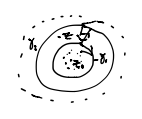

We can generalize the Taylor series to functions that have poles. This will be useful when we get to the residue theorem.
Theorem (Laurent Series)
Suppose that \(f\) is holomorphic on the annulus \(D=\{z\in\mathbb C | r<|z-z_0|<R\}\) for some \(r<R\) (\(r\) can be 0, \(R\) can be \(\infty\)).
Then we can write
\[\begin{split}f(z)&=\sum_{n=0}^\infty a_n(z-z_0)^n+\sum_{n=1}^\infty\frac{b_n}{(z-z_n)^n}\\
&=\sum_{n=-\infty}^\infty c_n(z-z_0)^n\end{split}\]
The sum converges L.U. on the annulus.
\[c_n=\frac{1}{2πi}\int_γ\frac{f(w)}{(w-z)^{n+1}}dw\]
where \(γ\) is a CCW circle with radius between \(r\) and \(R\).
Note
unlike for Taylor series,
\[a_n\neq \frac{f^{(n)}(z_0)}{n!}\]
\(f\) isn’t defined at \(z_0\), but the integrals are!
Proof:
Let \(γ_1,γ_2\) be circles of radii \(ρ_1,ρ_2\) respectively, and \(r<ρ_1<ρ_2<R\). Then for every \(z\) between \(γ_1\) and \(γ_2\),

\[f(z)=\frac{1}{2πi}\int_{γ_2}\frac{f(w)}{w-z}dw - \frac{1}{2πi}\int_{γ_1}\frac{f(w)}{w-z}dw\]
by the Cauchy Integral Formula.
On \(γ_2\), we use the identity:
\[\frac{1}{w-z}=\sum_{n=0}^\infty \frac{(z-z_0)^n}{(w-z_0)^{n+1}}\]
(LU Convergent) since
\[\begin{split}\left|\frac{z-z_0}{w-z_0}\right|<1\end{split}\]
on \(γ_2\).
So
\[\begin{split}\frac{1}{2πi}\int_{γ_2}\frac{f(w)}{w-z}dw&=\sum_{n=0}^\infty (z-z_0)^n\frac{1}{2πi}\int_{γ_2}\frac{f(w)}{(w-z)^{n+1}}dw\\
&=\sum_{n=0}^\infty (z-z_0)^na_n\end{split}\]
For \(γ_1\), we use the series
\[\begin{split}-\frac{1}{w-z}&=\frac{1}{z-w}\\
&=\sum_{n=0}^\infty\frac{(w-z_0)^n}{(z-z_0)^{n+1}}\end{split}\]
(LU Convergent) since
\[\begin{split}\left|\frac{w-z_0}{z-z_0}\right|<1\end{split}\]
on \(γ_1\)
So:
\[\begin{split}-\frac{1}{2πi}\int_{γ_1}\frac{f(w)}{w-z}dw&=\sum_{n=1}^\infty\frac{1}{(z-z_0)^n}\frac{1}{2πi}\int_{γ_1}\frac{f(w)}{(w-z)^{1-n}}dw\\
&=\sum_{n=1}^\infty\frac{1}{(z-z_0)^n}b_n\end{split}\]
Example
\[f(z) = \frac{1}{z(z-1)}\]
Consider \(r=1\), \(R=\infty\) (\(|z|>1\))
Then
\[\begin{split}\frac{1}{z(z-1)}&=\frac{1}{z^2(1-\frac{1}{z})}\\
&=\frac{1}{z^2}(1+\frac{1}{z}+\frac{1}{z^2}+\frac{1}{z^3}+...)\\
&=\frac{1}{z^2}+\frac{1}{z^3}+\frac{1}{z^4}+...\end{split}\]
On \(|z|<1\), so this is a Laurent series around zero for this radius.
If \(r=0\) and \(R=1\) (so \(0<|z|<1\))
Then
\[\begin{split}\frac{1}{z(z-1)}&=\frac{1}{z}(\frac{1}{1-z})\\
&=-\frac{1}{z}(1+z+z^2+...)\\
&=-\frac{1}{z}-1-z-z^2-...\end{split}\]
This is because the pole at \(z=1\) gets in our way.
Theorem (Uniqueness of Laurent Expansion)
For fixed \(r,R\), the Laurent expansion of \(f\) is unique on the annulus \(A\).
Proof:
Suppose
\[f(z)=\sum_{-\infty}^\infty a_n(z-z_0)^n\]
on \(A=\{z\in\mathbb C | r<|z-z_0|<R\}\).
Let \(γ\) be a loop in \(A\) around \(z_0\), \(I(γ,z_0)=1\).
\[\begin{split}\frac{1}{2πi}\int_{γ}\frac{f(w)}{(w-z_0)^{k+1}}&=\frac{1}{2πi}\sum_{n=-\infty}^\infty a_n(z-z_0)^{(n-k)-1}dw\\
&=\frac{1}{2πi}\int_γ\sum_{n=-\infty}^\infty a_n\int_γ(z-z_0)^{(n-k)-1}dw\\
&=\frac{1}{2πi}(a_00+a_10+...+a_k2πi+a_{k+1}0+...)\\
&=a_k\end{split}\]
So
\[a_k=\frac{1}{2πi}\int_γ\frac{f(w)}{(w-z_0)^{k+1}}dw\]
Finding Laurent Series
We don’t usually compute
\[\frac{1}{2πi}\int_γ\frac{f(w)}{(w-z_0)^{k+1}}dw\]
explicitly. That’s a bit inefficient. We tend to manipulate known series.
Example
\[\begin{split}&e^{\frac{1}{z}}\\
&r=0\\
&R=\infty\end{split}\]
Take
\[e^w=\sum_{n=0}^\infty\frac{w^n}{n!}\]
Then:
\[e^{\frac{1}{z}}=\sum_{n=0}^\infty\frac{1}{n!z^n}\]
Example
\[\begin{split}e^z+e^{\frac{1}{z}}&=\sum_{n=0}^\infty \frac{1}{n!z^n}+\sum_{n=0}^\infty \frac{z^n}{n!}\\
&=1+\sum_{n=-\infty}^\infty \frac{z^n}{|n|!}\end{split}\]
Example
\[e^{z+\frac{1}{z}}\]
One way: Let \(w=z+\frac{1}{z}\), and expand the series expansion for \(e^w\). See Assignment 10
Another way:
\[\begin{split}e^{z+\frac{1}{z}}&=e^ze^{\frac{1}{z}}\\
&=(\sum_{n=0}^\infty\frac{z^n}{n!})(\sum_{n=0}^\infty\frac{1}{n!z^n})\end{split}\]
So
\[e^{z+\frac{1}{z}}=\sum_{n=0}^\infty\sum_{m=0}^\infty\frac{z^{n-m}}{n!m!}\]
on \(|z|>0\).
So suppose we want the constant term. Then \(n=m\) so
\[\begin{split}a_n&=\sum_{m=0}^\infty\frac{1}{m!m!}
&=\sum_{m=0}^\infty(\frac{1}{m!})^2\end{split}\]
All other \(a_n\) are a little more complicated, depend on whether \(n>0\) or \(n<0\).
Geometric series is also often useful for computations:
Laurent series at \(z=0\) on \(r=|α|\), \(R=\infty\)
\[\begin{split}\frac{1}{z-α}&=\frac{1}{z}\frac{1}{1-\frac{α}{z}}\\
&=\frac{1}{z}\sum_{n=0}^\infty(\frac{α}{z})^n\\
&=\sum_{n=0}^\infty\frac{α^n}{z^{n+1}}\\
&=\frac{1}{z}+\frac{α}{z^2}+\frac{α^2}{z^3}+...\end{split}\]
Whice is a Laurent series
For \(r=0\), \(R=|α|\),
\[\begin{split}\frac{1}{z-α}&=-\frac{1}{α}\frac{1}{1-\frac{z}{α}}\\
&=-\frac{1}{α}\sum_{n=0}^\infty (\frac{z}{α})^n\\
&=\sum_{n=0}^\infty -\frac{z^n}{α^{n+1}}\end{split}\]
Which is a Taylor series.